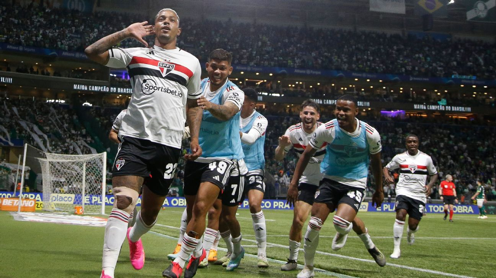

São Paulo futebol clube

São Paulo futebol clube foi fundado no dia 25 de janeiro de 1930. Em 2017 comecei a acompanhar
o clube definitivamente. Dentre tantos jogos, vitorias emocionantes, vexames, eliminações e titulos
aqui eu vou listar as partidas mais significantes para mim.
Vitórias ou classifações mais marcantes
- São paulo 1x1 Flamegno- Final da copa do Brasil 2023
- São paulo 2x0 Corinthans- Semifinal da copa do Brasil 2023
- São paulo 2x0 Palmeiras- Final do campeonato paulista 2021
- São paulo 2x1 Palmeiras- Quartas de final da copa do Brasil 2023
- São paulo 3x1 Corinthans- Brasileirão 2018
Piores eliminações e derrotas que eu vi
- São paulo 1x1 Botafogo (4x5)- Quartas de final da Libertadores 2024
- São paulo 0x4 Palmeiras- Final do campeonato paulista 2022
- São paulo 0x2 Independente Dell vale- Final da Sudamericana 2022
- São paulo 1x2 Corinthans - Final do campeonato paulista 2019
- São Paulo 0x5 Internacional - Brasileirão 2020